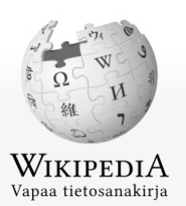

Wiki sivusto
Wiki on verkkosivusto, jonka sisältöä käyttäjät voivat itse muokata haluamallaan tavalla, usein ilman sivustolle kirjautumista. Vuorovaikutteisuus ja muutosten tekemisen yksinkertaisuus tekevät wikistä tehokkaan yhteisöllisen kirjoittamisen työkalun. Termillä wiki voidaan myös viitata yhteistyöohjelmistoihin, jotka helpottavat wiki-verkkosivustojen käyttöä.
Ensimmäisen wikiohjelmiston (WikiWikiWeb) kehittänyt Ward Cunningham määritteli wikin "yksinkertaisimmaksi verkossa olevaksi tietokannaksi, jonka olisi mahdollista toimia."[1]
Nimi juontuu ilmaisusta "wiki wiki", joka tarkoittaa nopeaa havaijin kielellä. Sivujen sisällön luomisen ja muuttamisen nopeus ja välikäsien puuttuminen ovatkin wikitekniikan tärkeimmät ominaisuudet. Wikejä on pidetty tehokkaana tiedonvälitys- ja yhteiskehittelyn alustana myös organisaatioiden käytössä.
Wikit olivat blogien ohella ensimmäisiä selvästi web 2.0 -verkkopalveluita. Wikit vaikuttivat osaltaan kehitykseen, joka on johtanut käyttäjien itsensä luoman sisällön (user-generated content, UGC) nopeaan lisääntymiseen WWW:ssä. Wikejä edelsivät BBS, IRC ja keskustelupalstat. Nykyisin wikitoimintoja sisältyy useisiin verkkopalveluihin.
Ominaisuudet
Wikiin voi luoda sivuja käyttäen yksinkertaista merkintäkieltä (wiki markup) tai HTML-pohjaista WYSIWYG-editoria. Kehittyneimmissä wikeissä sisältö koostuu useista sisältöalueista sekä muista verkkopalveluista upotetuista sisällöistä. Useammat wikit sijaitsevat julkisessa verkossa World Wide Web, joka on Internetin osa. Yksi sivu wikissä on ”wikisivu”, kun taas sivujen summa muodostaa koko sivuston eli ”wikin”.
Vanhemmissa wikiohjelmissa sivut luodaan yksinkertaisella merkintäkielellä editointitilassa, yleensä selaimen luomassa tekstinmuokkauskentässä. Tallennettaessa uusi tai muokattu sivu, merkintäkieli tulkitaan selaimen ymmärtämäksi (X)HTML-kieleksi. Joissakin uudemmissa wikeissä on mahdollisuus käyttää myös ulkoasun mallintavaa WYSIWYG-muokkaustekniikkaa samalla, kun käyttäjä muokkaa tai lisää uuden sivun.
Pelkistetyt wikit sallivat ainoastaan tekstin ja linkkien käytön wikisivuilla, kun taas kehittyneimmät wikit mahdollistavat kuvien, taulukoiden, matemaattisten yhtälöiden ja jopa hieroglyfien lisäämisen wikisivuille. Sosiaalisen median palvelujen lisääntymisen myötä uusimpiin wikeihin voidaan upottaa myös esimerkiksi videoita, slideshow-esityksiä, valokuvasarjoja, käsitekarttoja, käyttäjien profiilitietoja, RSS-syötteitä ja lukuisia muita sisältöjä ja dynaamisia toimintoja.
Ensimmäisissä wikeissä ei käytetty merkintäkieltä, ja linkit sivujen välille luotiin käyttämällä sanoja, joissa oli vähintään kaksi isoa kirjainta (ns. CamelCase). Tämä on vapaamuotoisemmassa tekstissä ongelmallista ja nykyisin linkkien tekoon käytetään merkintäkielen ominaisuuksia. Esimerkiksi MediaWikissä linkki toiselle sivulle muodostuu laittamalla sana kaksinkertaisten hakasulkujen väliin.
Etenkin tietokantoja käyttävät wikit tallentavat samasta sivusta useampia versioita, jolloin muutoksia sivun eri versioiden välillä voidaan seurata ja vanha versio voidaan palauttaa helposti. Tällaiset wikit sisältävät usein toimintosivun viimeisten muutosten seuraamiseen.
Katso myös
Avoin tietosanakirja
Suomenkielisen Wikipedian luettelo suomenkielisistä wikeistä
Wikipedia

Esimerkki järjestettämättömästä listasta
- Listan eka rivi
- Listan toka rivi
- Listan kolmas rivi
- Listan neljäs rivi
| Etunimi |
Sukunimi |
Ikä |
| Matti |
Matson |
22 |
| Liisa |
Tammi |
55 |
| Jaana |
Jaakkolainen |
19 |